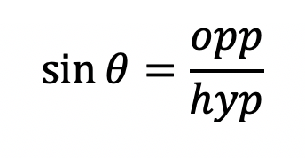
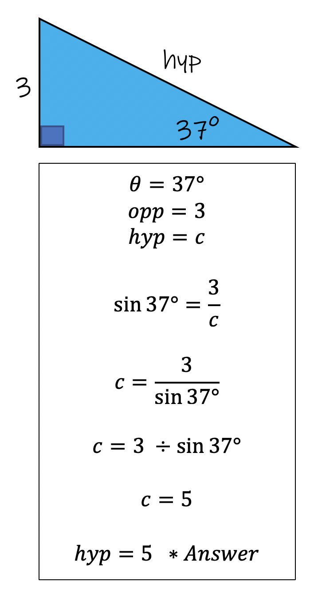

The Sine function is a formula that you can use to solve for a right triangle's side lengths. Sine is abbreviated as SIN.

The sin formula contains three variables: Ɵ theta, opposite, and hypotenuse. All three variables are given to you as part of the problem. Typically one variable will be missing and we can use the equation to calcuate it.
Example 1: Calculate the length of the hypotenuse.

To utilize the sine function, it is important to label the opposite, adjacent, and hypotenuse correctly. With practice all things will become perfect! It is also important that you master using the three trig functions: sin, cos, and tan. They will be a part of Algebra 2, Pre-Calculus, and beyond. Trig is hard to learn at first but once you get it it is really fun! Trigonometry was the topic I liked to teach the most because it is so rewarding once you understand it.